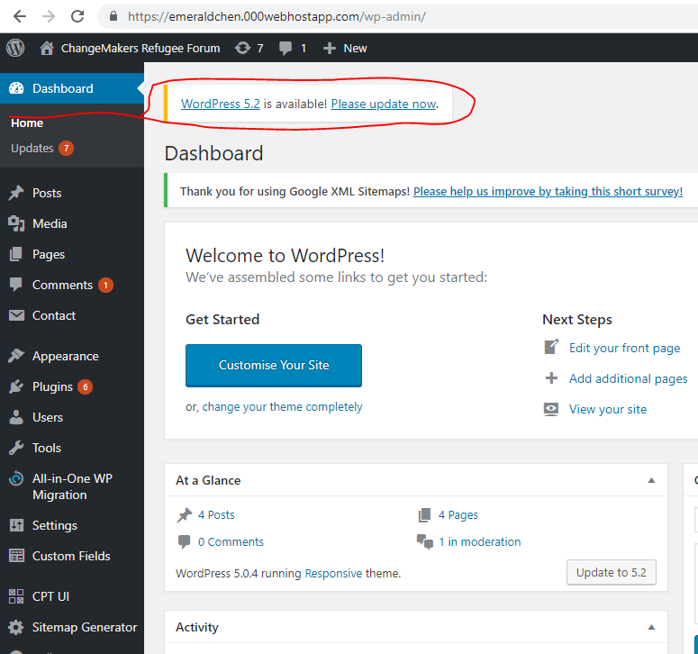
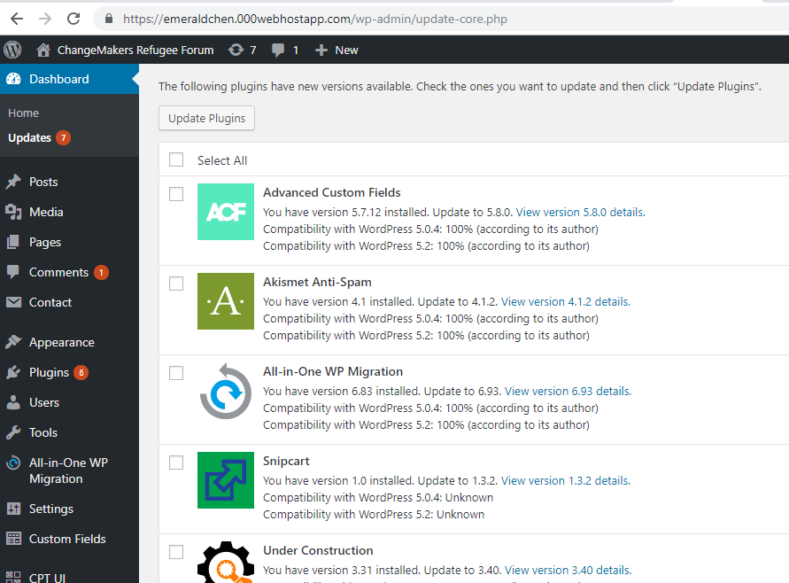
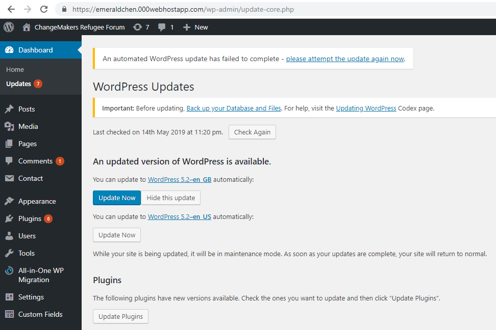
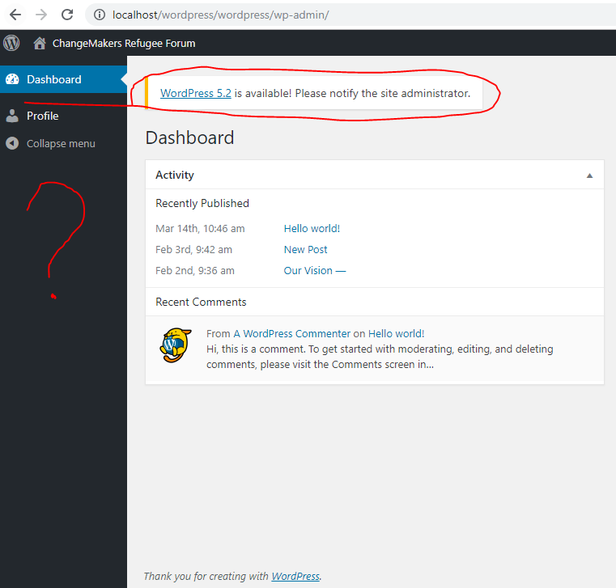

On May 7, 2019, WordPress 5.2 “Jaco”, named for the jazz musician Jaco Pastorius, was released to the public.
******************* WordPress Backups *******************
*************** Click the link "Please update now" *****************
*************** Click the button "Update plugins" ***************
*************** Refresh the page F5 ***************

*************** Reclick the button "Update Now" ***************
I accidentally logged in the Admin account instead of Root account, which cost me some time to realize there's no error...
Back to